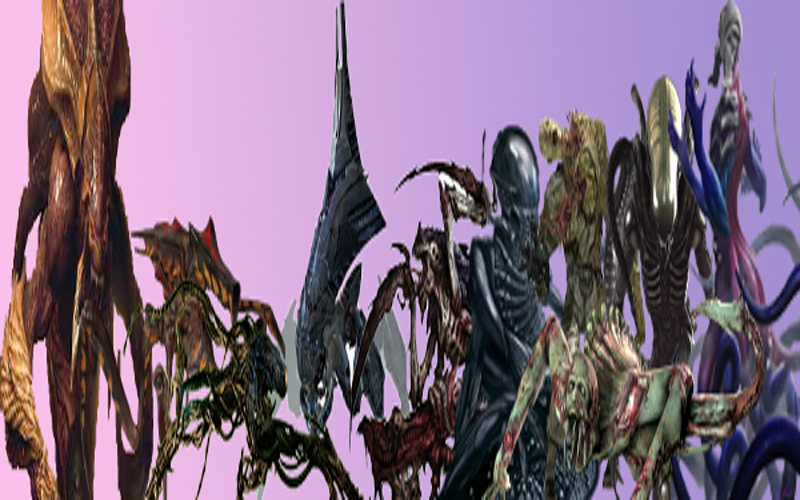

Arachnids - Starship Troopers: In the franchise called Star Ship Troopers, humanity started to be an inter-stellar specie, and in their
continuous expansion, we found ourselves with another specie that is doing the same and it is expanding through the galaxy. The Arachnids
have in their biology large numbers of advantages in compar-ison with humanity. They are bigger, faster, armored, and full of lethal limbs,
they reproduce at a velocity thousands of times faster. Humanity has one advantage to closing all that difference and that is our intellect.
Our intellect is the fountain of our advanced technology, tactical movements, and adapt-ability. The clash between species comes with a painful
defeat in our first battle, then we level up the battlefield. Despite this, Arachnids can be faced only by humanity that is represented as many
centuries more advanced that our actual state. If this monster comes our way in our time, they probably can defeat us quickly
Reapers - Mass Effect: The Mass Effect saga is one of the most acclaimed video games of the last 15 years. These games developed by Electronic Arts present us with a fantastic sci-fi story where the humans just arrived to be a galactic specie, and find some others species reached that state before. Furthermore, mankind seeks to be received as one and equal to those species that are sharing large por-tions of the galaxy. In the storyline of the games, you find a large conspiracy where an ancient and far more advanced specie had created a cycle of life of 50,000 years where this specie let some other species develop their intellect and civiliza-tion to come and collect their brain and biological material. This specie is named Reapers, they used the galaxy as a vivarium to multiply their biological sources to power up their bodies. This species is capable of fusion the machine and the biological parts and using the best virtue of both. You can describe them as the fusion of thousands or even millions of minds in a large and immortal machine. The only time when they are truly vulnerable is the large portion of time when they are in standby mode between the collection of the new biological material.
Necromorphs - Dead Space: This is another franchise born of the golden era of Electronic Arts, in this series terror is one of the key elements that run the gameplay of the games. The neu-romorphic invasion is based on large effigies that are distributed throughout the galaxy that inflict a horrendous infection in the dead remaining several species that had been attacked in the distant corners of the galaxy. This infection affected all the intelligent forms of life that are dead at the mo-ment of contact with this virus. They are extremely vicious and will attack any-body who is not infected yet. The objective is to kill and get more bodies to propagate the infection. The previously name effigies are the devices that prop-agate the infection and make the preparation for the moment called the con-vergence. Where a whole planet or moon with life is absorbed completely and liquefied with the planet itself and turn them in what is called the twin moons. These moons are moving through space looking for more inhabited planets to expand even further. These moons are theorized to be capable of moving through galaxies, making this species a universal threat. The only possible weakness is one specie being capable to intervene or modifying the effigies, if this is achievable you can neu-tralize the source of the infection.
The Flood- Halo: It is a parasite element created 10 million years ago by the precursors. It is capable to consume all the life forms with biomass. It has a preference for ad-vanced specie with highly developed cognitive brains. The flood in the initial stages of development can seem not that dangerous, and more with the absence of a gravemind. The gravemind is the fusion is the accumulation of the so-called “Flood Super Cells”. The gravemind is the control center of the specie, it can command, makes tactics, and transmit knowledge to every active member. The scariest thing about the flood and beyond the previous spot with the Nec-romorphs is the flood needs the biomass to stay alive, this means the people or beings that turn into flood are alive and conscious, they feel and know they are being manipulated. What a horrible thought is to imagine being part of that. That’s why humans have a huge war against a covenant of more advanced alien species, this creature is by far the scarier danger of the Halo Universe. One of the most incredible qualities is the capacity to absorb the knowledge of any being absorbed, so any weapon, tactic, or technology can be absorbed and learned to be used for them. So, any possible initial advantage could turn out to be the nightmare of any specie that is fighting back against the flood.
Xenomorphs- Alien: The big Nemesis of one the most legendary series created in cinema’s history is a terrible specie capable to annihilate others, the capability of parasite other species and using the characteristics and best features of this to create new advantages. They’re born as a Bio-weapon created by the engineers, those who created humanity itself in the lore of this franchise. They are highly adapted to prey on other species, and they displayed cunning that rivals even humans. They have a strong exoskeleton, long claws, and a long tail that they use like and harpoon. The most notable feature is their acid blood, this substance in the first place is a great defense that avoids being assimilated by others. This keeps them as the apex creature in any biological system. The adaptability of their DNA is key, and the capacity to create hybrids. This allows the creation of new xenomorphs adapted to any environment. For exam-ple, if they absorb creatures with wings, we can see Xenomorphs with wings. If they absorb a creature capable of breathing water, they can be an aquatic spe-cies, if they catch a colossal creature a massive xenomorph can be bred from it. This turns this specie into the superior since they can take every advantage of their enemy’s turn it into their own.
Zerg- Starcraft: The creatures of StarCraft called the Zerg are arthropod advanced specie that shares the quality of other species previously mentioned in the ranking of ab-sorbing and adapting DNA of other species to acquire their better advantages. They have a huge rate of reproduction that surpass those of the Arachnids, the Xenomorphs, and even the Tiranidos. They have many sub-types inside their ranks, each one specialized in specific tasks where are facing other species. The Zerg have an impressive exoskeleton that makes them resistant to high-caliber weapons, and chemistry attacks. The only weakness detected is the highly concentrated radiation. Only the leviathan is strong enough to resist the radiation of the stars and they transport the other troops into outer space. Their regenerating capabilities are awesome and make them even harder to be taken down. They have an internal process where the dead cells turn rapid-ly into proteins that nourish those around them alive and multiply to recreate those that recently were damaged. The most impressive is the new cells will be better than the previous ones, they will be more resistant to the type of damage that is receiving. The Zerg observe and learn from their enemies and adapt accordingly. This makes them extremely lethal and almost impossible to contain.
Tyranids- Warhammer 40,000: They are depredators that consume every specie that they found in their path, for them the other species are more mediums that multiplies their numbers, they can travel by swarms through space. They can obliterate whole worlds to consume their biomass, they came from another galaxy, and they are capable to cover those vast distances in their bottomless hunger. They can presume their species to be ancient, and their long history forms a long list of clans, they are extremely organized making them more terrible. They can affect and interrupt the technology of their next prey and even attack their psychic powers. So, they can be prepared for the battlefield even before getting close to the next planet they are about to invade. On top of that, they have a huge adaptability that allows them rapidly to count-er any weapon, strategy, or technology that use against them. Any attack that works on them once rarely can do it twice.
Mimics- Edge of Tomorrow: They move between planets and solar systems in meteors, they also have the main mind that manages the specie in a like hive mind. The most spectacular capacity they have is the power of rewind time. It is with this capacity they can surpass the previ-ous species; this power can nullify the amazing adaptability of Zergs, Tiranidos, and Flood. They have solid bodies, are amazingly fast and they multiply whips that can support points that can hold their body, making them exceedingly acrobatics. The hierarchy is simple, they have 3 tiers, the common drones, dominant alphas, and one unique Omega. The Omega is the central mind of the hive, each hive is gifted with one Ome-ga and there is the suspicion they are multiples Omega traveling through space and conquering it. The Drones are counted by millions and they lack the ability called Chrono Kine-sis which allows them to modify time. They have bright orange bioluminescence. The Alphas are extremely rare in the movie a scientist calculates that only 1 out of 6 million is an alpha, they are bigger than drones and their bioluminescence is bright blue. They are like the nervous system of the hive. Every time an enemy is capable to find and kill an alpha this trigger the ability Chrono Synectic that rewinds the time 24 hours before. There are theories this ability takes as reference one rotation of the planet where is activated. The advantage is the hive retains the memories of what happened, this uncaps the possibility of the foresight of what is coming and avoids it. If you think about this means there is no chance to grab them unguard or surprise them. The only weakness was that one reflected in the movie where by chance a couple of members of our specie acquire the same power. They are close to being invincible. What are the other 2 who are above?
Trisolarans- The Three Body-Problem The Trisolarans are the protagonist of the books that referred by the name of the 1st book of the trilogy called The Three-Body Problem, they were born in the Proxima Centaury Solar System. They plan to conquer the whole universe in substitution for their world that is on the brink of destruction, they are capable to modify their body at will, and they can dehydrate their body to be capable to hibernate on the long journey through space. They can enter states of matter where they are invulnerable to any damage. They can use the electromagnetic power of their brain to intercept thoughts, and the high capacity of their brain allows them to develop highly advanced language and thinking, they are invulnerable to psychic powers. They can ma-nipulate subatomic particles with precision, they can modify the constant of physics in particular regions of space. They are capable to modified reality until certain limits, there are some limits they are not capable of modifying for exam-ple they cannot surpass light speed. That’s why they still use the motor of curvature, this motor allows them to accel-erate and deaccelerate at will inside of those tunnels that curve the space. They can attack at the subatomic level to modify the natural development of culture, and modify the thoughts of the members of the rival civilization, and with this weak them even before launching the first noticeable attack. If the civilization is weak enough, they can destroy themselves.
Eldrazis- Magic the Gathering: Eldrazis are the maximum menace proposed in the enriched lore of Magic the Gathering, they are constantly traveling through dimensions and planes until they reach one with enough energy to be attractive to them. Once they are in the dimension, they form appropriate avatars for the dimension that they chose. They start absorbing the energy of any alive being in that dimension, if they are not stopped the dimension will become an empty shell without any lifeform or energy. Surprisingly, they are necessary to keep the balance in the multiverse to keep going through the cycle of destruction and creation. They serve a similar role as the god of destruction in the Dragon Ball franchise. They transcend the designation of being a race of parasites or conquerors, they are in the sphere of being a force of nature. They are commanded by the 3 titans Eldrazis, and those 3 never know the defeat, they could be slower or trapped for periods but in the end, they fulfilled their tasks. Those 3 can only be matched to those horror beings of the Lovecraft myths. Their strength goes beyond of the use brute force, technology, tactics, and magic. They can teleport, absorb any kind of energy, deform reality, manipulate time, corruption of any body or mind, and possess immortality. In our extensive knowledge of the sci-fi world, this is the specie that we think reigns at the top as the most powerful.
Reapers - Mass Effect: The Mass Effect saga is one of the most acclaimed video games of the last 15 years. These games developed by Electronic Arts present us with a fantastic sci-fi story where the humans just arrived to be a galactic specie, and find some others species reached that state before. Furthermore, mankind seeks to be received as one and equal to those species that are sharing large por-tions of the galaxy. In the storyline of the games, you find a large conspiracy where an ancient and far more advanced specie had created a cycle of life of 50,000 years where this specie let some other species develop their intellect and civiliza-tion to come and collect their brain and biological material. This specie is named Reapers, they used the galaxy as a vivarium to multiply their biological sources to power up their bodies. This species is capable of fusion the machine and the biological parts and using the best virtue of both. You can describe them as the fusion of thousands or even millions of minds in a large and immortal machine. The only time when they are truly vulnerable is the large portion of time when they are in standby mode between the collection of the new biological material.
Necromorphs - Dead Space: This is another franchise born of the golden era of Electronic Arts, in this series terror is one of the key elements that run the gameplay of the games. The neu-romorphic invasion is based on large effigies that are distributed throughout the galaxy that inflict a horrendous infection in the dead remaining several species that had been attacked in the distant corners of the galaxy. This infection affected all the intelligent forms of life that are dead at the mo-ment of contact with this virus. They are extremely vicious and will attack any-body who is not infected yet. The objective is to kill and get more bodies to propagate the infection. The previously name effigies are the devices that prop-agate the infection and make the preparation for the moment called the con-vergence. Where a whole planet or moon with life is absorbed completely and liquefied with the planet itself and turn them in what is called the twin moons. These moons are moving through space looking for more inhabited planets to expand even further. These moons are theorized to be capable of moving through galaxies, making this species a universal threat. The only possible weakness is one specie being capable to intervene or modifying the effigies, if this is achievable you can neu-tralize the source of the infection.
The Flood- Halo: It is a parasite element created 10 million years ago by the precursors. It is capable to consume all the life forms with biomass. It has a preference for ad-vanced specie with highly developed cognitive brains. The flood in the initial stages of development can seem not that dangerous, and more with the absence of a gravemind. The gravemind is the fusion is the accumulation of the so-called “Flood Super Cells”. The gravemind is the control center of the specie, it can command, makes tactics, and transmit knowledge to every active member. The scariest thing about the flood and beyond the previous spot with the Nec-romorphs is the flood needs the biomass to stay alive, this means the people or beings that turn into flood are alive and conscious, they feel and know they are being manipulated. What a horrible thought is to imagine being part of that. That’s why humans have a huge war against a covenant of more advanced alien species, this creature is by far the scarier danger of the Halo Universe. One of the most incredible qualities is the capacity to absorb the knowledge of any being absorbed, so any weapon, tactic, or technology can be absorbed and learned to be used for them. So, any possible initial advantage could turn out to be the nightmare of any specie that is fighting back against the flood.
Xenomorphs- Alien: The big Nemesis of one the most legendary series created in cinema’s history is a terrible specie capable to annihilate others, the capability of parasite other species and using the characteristics and best features of this to create new advantages. They’re born as a Bio-weapon created by the engineers, those who created humanity itself in the lore of this franchise. They are highly adapted to prey on other species, and they displayed cunning that rivals even humans. They have a strong exoskeleton, long claws, and a long tail that they use like and harpoon. The most notable feature is their acid blood, this substance in the first place is a great defense that avoids being assimilated by others. This keeps them as the apex creature in any biological system. The adaptability of their DNA is key, and the capacity to create hybrids. This allows the creation of new xenomorphs adapted to any environment. For exam-ple, if they absorb creatures with wings, we can see Xenomorphs with wings. If they absorb a creature capable of breathing water, they can be an aquatic spe-cies, if they catch a colossal creature a massive xenomorph can be bred from it. This turns this specie into the superior since they can take every advantage of their enemy’s turn it into their own.
Zerg- Starcraft: The creatures of StarCraft called the Zerg are arthropod advanced specie that shares the quality of other species previously mentioned in the ranking of ab-sorbing and adapting DNA of other species to acquire their better advantages. They have a huge rate of reproduction that surpass those of the Arachnids, the Xenomorphs, and even the Tiranidos. They have many sub-types inside their ranks, each one specialized in specific tasks where are facing other species. The Zerg have an impressive exoskeleton that makes them resistant to high-caliber weapons, and chemistry attacks. The only weakness detected is the highly concentrated radiation. Only the leviathan is strong enough to resist the radiation of the stars and they transport the other troops into outer space. Their regenerating capabilities are awesome and make them even harder to be taken down. They have an internal process where the dead cells turn rapid-ly into proteins that nourish those around them alive and multiply to recreate those that recently were damaged. The most impressive is the new cells will be better than the previous ones, they will be more resistant to the type of damage that is receiving. The Zerg observe and learn from their enemies and adapt accordingly. This makes them extremely lethal and almost impossible to contain.
Tyranids- Warhammer 40,000: They are depredators that consume every specie that they found in their path, for them the other species are more mediums that multiplies their numbers, they can travel by swarms through space. They can obliterate whole worlds to consume their biomass, they came from another galaxy, and they are capable to cover those vast distances in their bottomless hunger. They can presume their species to be ancient, and their long history forms a long list of clans, they are extremely organized making them more terrible. They can affect and interrupt the technology of their next prey and even attack their psychic powers. So, they can be prepared for the battlefield even before getting close to the next planet they are about to invade. On top of that, they have a huge adaptability that allows them rapidly to count-er any weapon, strategy, or technology that use against them. Any attack that works on them once rarely can do it twice.
Mimics- Edge of Tomorrow: They move between planets and solar systems in meteors, they also have the main mind that manages the specie in a like hive mind. The most spectacular capacity they have is the power of rewind time. It is with this capacity they can surpass the previ-ous species; this power can nullify the amazing adaptability of Zergs, Tiranidos, and Flood. They have solid bodies, are amazingly fast and they multiply whips that can support points that can hold their body, making them exceedingly acrobatics. The hierarchy is simple, they have 3 tiers, the common drones, dominant alphas, and one unique Omega. The Omega is the central mind of the hive, each hive is gifted with one Ome-ga and there is the suspicion they are multiples Omega traveling through space and conquering it. The Drones are counted by millions and they lack the ability called Chrono Kine-sis which allows them to modify time. They have bright orange bioluminescence. The Alphas are extremely rare in the movie a scientist calculates that only 1 out of 6 million is an alpha, they are bigger than drones and their bioluminescence is bright blue. They are like the nervous system of the hive. Every time an enemy is capable to find and kill an alpha this trigger the ability Chrono Synectic that rewinds the time 24 hours before. There are theories this ability takes as reference one rotation of the planet where is activated. The advantage is the hive retains the memories of what happened, this uncaps the possibility of the foresight of what is coming and avoids it. If you think about this means there is no chance to grab them unguard or surprise them. The only weakness was that one reflected in the movie where by chance a couple of members of our specie acquire the same power. They are close to being invincible. What are the other 2 who are above?
Trisolarans- The Three Body-Problem The Trisolarans are the protagonist of the books that referred by the name of the 1st book of the trilogy called The Three-Body Problem, they were born in the Proxima Centaury Solar System. They plan to conquer the whole universe in substitution for their world that is on the brink of destruction, they are capable to modify their body at will, and they can dehydrate their body to be capable to hibernate on the long journey through space. They can enter states of matter where they are invulnerable to any damage. They can use the electromagnetic power of their brain to intercept thoughts, and the high capacity of their brain allows them to develop highly advanced language and thinking, they are invulnerable to psychic powers. They can ma-nipulate subatomic particles with precision, they can modify the constant of physics in particular regions of space. They are capable to modified reality until certain limits, there are some limits they are not capable of modifying for exam-ple they cannot surpass light speed. That’s why they still use the motor of curvature, this motor allows them to accel-erate and deaccelerate at will inside of those tunnels that curve the space. They can attack at the subatomic level to modify the natural development of culture, and modify the thoughts of the members of the rival civilization, and with this weak them even before launching the first noticeable attack. If the civilization is weak enough, they can destroy themselves.
Eldrazis- Magic the Gathering: Eldrazis are the maximum menace proposed in the enriched lore of Magic the Gathering, they are constantly traveling through dimensions and planes until they reach one with enough energy to be attractive to them. Once they are in the dimension, they form appropriate avatars for the dimension that they chose. They start absorbing the energy of any alive being in that dimension, if they are not stopped the dimension will become an empty shell without any lifeform or energy. Surprisingly, they are necessary to keep the balance in the multiverse to keep going through the cycle of destruction and creation. They serve a similar role as the god of destruction in the Dragon Ball franchise. They transcend the designation of being a race of parasites or conquerors, they are in the sphere of being a force of nature. They are commanded by the 3 titans Eldrazis, and those 3 never know the defeat, they could be slower or trapped for periods but in the end, they fulfilled their tasks. Those 3 can only be matched to those horror beings of the Lovecraft myths. Their strength goes beyond of the use brute force, technology, tactics, and magic. They can teleport, absorb any kind of energy, deform reality, manipulate time, corruption of any body or mind, and possess immortality. In our extensive knowledge of the sci-fi world, this is the specie that we think reigns at the top as the most powerful.